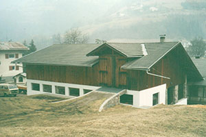
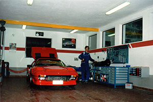
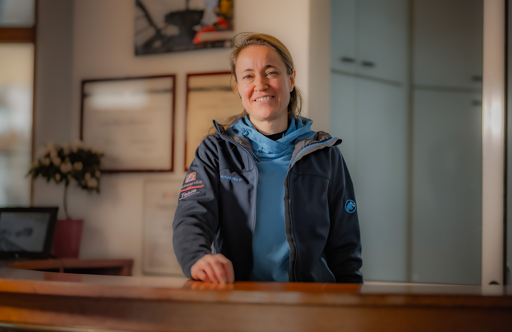

LA NOSTRA STORIA
Dal 1986,
una storia di famiglia.
La passione di Hugo per le auto ha dato inizio a un percorso fatto di lavoro, persone e fiducia.
1986L’inizio di una passione

LE PRIME PAGINE
Una passione
che prende forma.
Nel 1986, la passione di Hugo diventa il primo capitolo di una storia di famiglia. Dagli inizi in officina a oggi, sicurezza, trasparenza e fiducia restano il modo in cui ci prendiamo cura di ogni cliente.


LE PERSONE, AL CENTRO
La passione continua
nelle persone.
Hugo e Lidia, insieme a un team specializzato, hanno fatto crescere questa storia con competenza e attenzione. La formazione continua e attrezzature all’avanguardia mantengono vivo lo stesso impegno: sicurezza e fiducia, ogni giorno.

UN LEGAME CHE CONTINUA